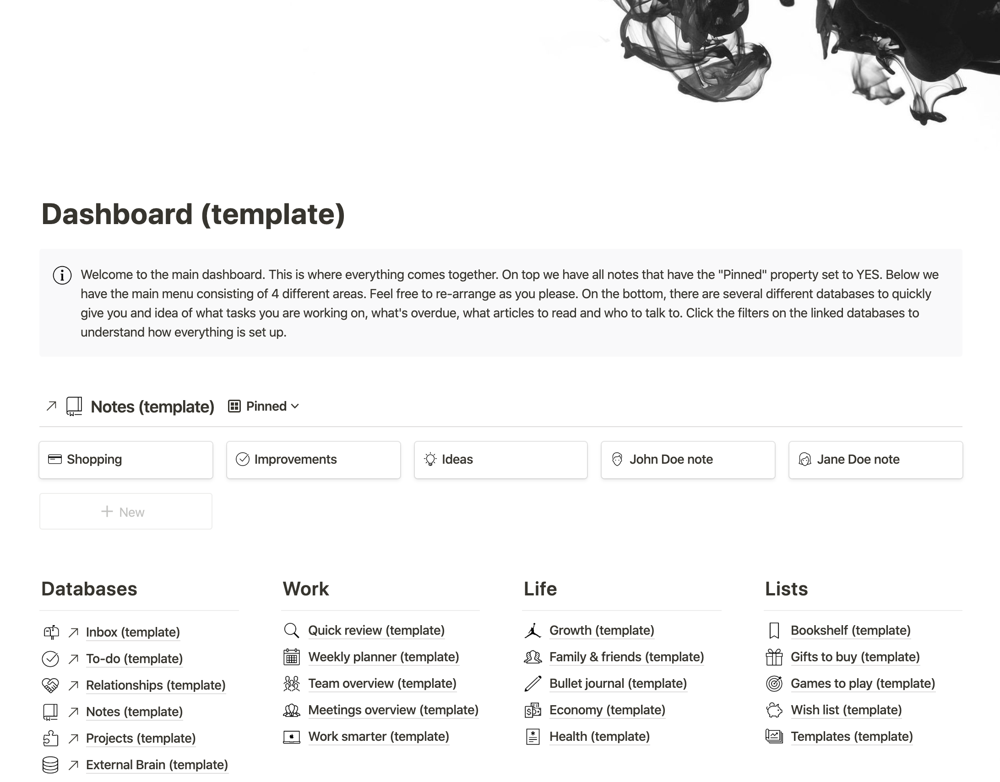
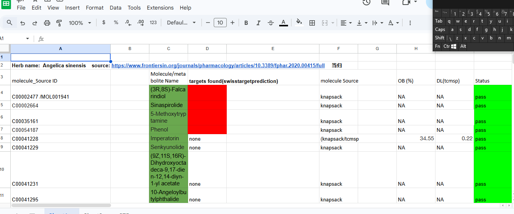

I build structured systems for remote teams — from chaos to clarity.
Operations Specialist with 3+ years experience in workflow optimization, async collaboration, and documentation-driven execution.
The Operator.
With a foundation in high-stakes retail operations, I transitioned to the remote landscape to solve the friction of distributed teams. I believe that clarity is the ultimate competitive advantage, and I deliver it through rigid architectural documentation and automated operational flows.
Featured Projects

Client Onboarding Wiki (Notion)
A structured onboarding system for async teams with SOPs, templates, and check-ins.

Operations Tracker Dashboard (Google Sheets)
Weekly operations tracking system with automated reporting and status visibility.

Content Scheduling System (Notion)
Async content workflow for consistent weekly publishing.
Core Systems
- SOP Design
- Inventory Tracking
- Process Mapping
- Async Frameworks
- Slack Architecture
- Internal Reporting
Logs / Timeline
Freelance Remote Work
Managing complex workflow architectures for remote startups, focusing on tool-stack consolidation and SOP creation.
Freshmart Superstore
Supervised and for and inventory management and floor operations, achieving record-breaking efficiency metrics and audit scores.